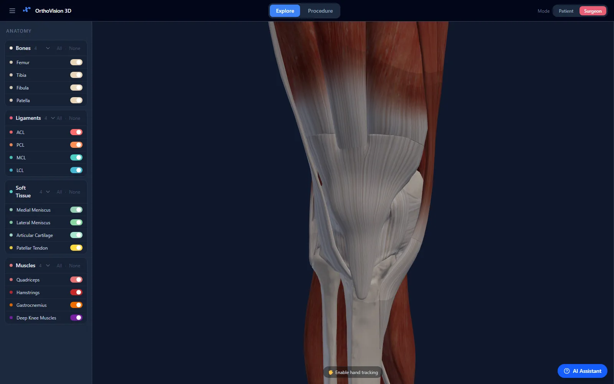

Anatomy you can explore without touching anything.
A browser-based 3D knee for surgeons and patients, controlled by hand gestures and voice. It won 1st Place Overall and the Arthrex Challenge, and became my capstone with Arthrex.
- RoleHand tracking, scene controls, speech to text
- Team3 people, one weekend
- Built inTypeScript, React Three Fiber, Python, MediaPipe
- Demoorthovision-seven.vercel.app

The constraint
Arthrex asked teams to help surgeons treat their patients better. Our answer was an interactive knee with a step-by-step ACL reconstruction walkthrough, separate surgeon and patient modes, and an AI assistant. One constraint shaped my part: in a sterile field, a surgeon can't reach for a mouse or a touchscreen.
Gestures that wait until they're meant
Raw hand tracking jitters, and a model that drifts while your hand rests feels broken. My Python sidecar (MediaPipe, OpenCV) streams gestures to the browser over WebSockets at 30 FPS, through three filters.
- Landmarks30 FPS, noisy
- Hysteresisa gesture must hold before it switches
- Dead zoneswallows small tremors
- EMA smoothingsteadies continuous motion
- Sceneorbit, zoom, select
Voice selects, hands navigate
Pointing at one of hundreds of small structures in mid-air is slow and error-prone. Naming one is instant. Saying a structure's name selects it and flies the camera to it, while hands handle orbit and zoom. A GPT-4o-mini assistant returns structured JSON that drives the scene.
Touch-free input has no click to confirm it worked, so the 452-mesh model answers every selection with an animated highlight. If it lands on the wrong structure, you see it right away.
What came next
The win turned into my capstone with Arthrex: a hand-tracking UI library for surgical VR.